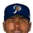
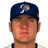
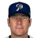
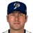
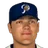
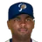
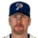
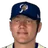
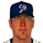
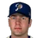

Franchise record book · ABL
Portland Beavers
Seasons covered: 2002–2002. Only games played for this franchise count.
This club has no pre-2002 history in the export, so its record book is the 2002 season to date. Rate records need 3.1 PA or 1 inning per team game.
Home runs
| # | Player | Season | Team | Home runs |
|---|---|---|---|---|
| #1 | 2002 (ABL) |  Portland Beavers Portland Beavers | 8 | |
| #2 |  Jeffrey Hammonds • | 2002 (ABL) | Portland Beavers | 6 |
| #3 |  Morgan Ensberg • | 2002 (ABL) | Portland Beavers | 5 |
| #4 | Angel Pena • | 2002 (ABL) | Portland Beavers | 5 |
| #5 | Rafael Furcal • | 2002 (ABL) | Portland Beavers | 5 |
| #6 |  J.T. Snow • | 2002 (ABL) | Portland Beavers | 4 |
| #7 |  Nick Punto • | 2002 (ABL) | Portland Beavers | 3 |
| #8 | Chin-Feng Chen • | 2002 (ABL) | Portland Beavers | 3 |
| #9 |  Alex S. Gonzalez • | 2002 (ABL) | Portland Beavers | 2 |
| #10 | 2002 (ABL) | Portland Beavers | 1 |
Hits
| # | Player | Season | Team | Hits |
|---|---|---|---|---|
| #1 | Rafael Furcal • | 2002 (ABL) | Portland Beavers | 52 |
| #2 | J.T. Snow • | 2002 (ABL) | Portland Beavers | 49 |
| #3 |  Marlon Byrd • | 2002 (ABL) | Portland Beavers | 49 |
| #4 | 2002 (ABL) | Portland Beavers | 46 | |
| #5 | Jeffrey Hammonds • | 2002 (ABL) | Portland Beavers | 46 |
| #6 | Morgan Ensberg • | 2002 (ABL) | Portland Beavers | 41 |
| #7 | Nick Punto • | 2002 (ABL) | Portland Beavers | 40 |
| #8 | Alex S. Gonzalez • | 2002 (ABL) | Portland Beavers | 38 |
| #9 | Angel Pena • | 2002 (ABL) | Portland Beavers | 32 |
| #10 | Chin-Feng Chen • | 2002 (ABL) | Portland Beavers | 20 |
RBI
| # | Player | Season | Team | RBI |
|---|---|---|---|---|
| #1 | Morgan Ensberg • | 2002 (ABL) | Portland Beavers | 32 |
| #2 | 2002 (ABL) | Portland Beavers | 31 | |
| #3 | Jeffrey Hammonds • | 2002 (ABL) | Portland Beavers | 25 |
| #4 | Angel Pena • | 2002 (ABL) | Portland Beavers | 24 |
| #5 | Rafael Furcal • | 2002 (ABL) | Portland Beavers | 24 |
| #6 | Marlon Byrd • | 2002 (ABL) | Portland Beavers | 23 |
| #7 | Alex S. Gonzalez • | 2002 (ABL) | Portland Beavers | 15 |
| #8 | Nick Punto • | 2002 (ABL) | Portland Beavers | 15 |
| #9 | J.T. Snow • | 2002 (ABL) | Portland Beavers | 14 |
| #10 | Chin-Feng Chen • | 2002 (ABL) | Portland Beavers | 13 |
Runs
| # | Player | Season | Team | Runs |
|---|---|---|---|---|
| #1 | J.T. Snow • | 2002 (ABL) | Portland Beavers | 34 |
| #2 | Morgan Ensberg • | 2002 (ABL) | Portland Beavers | 28 |
| #3 | Marlon Byrd • | 2002 (ABL) | Portland Beavers | 27 |
| #4 | Rafael Furcal • | 2002 (ABL) | Portland Beavers | 26 |
| #5 | Jeffrey Hammonds • | 2002 (ABL) | Portland Beavers | 22 |
| #6 | Alex S. Gonzalez • | 2002 (ABL) | Portland Beavers | 21 |
| #7 | Nick Punto • | 2002 (ABL) | Portland Beavers | 19 |
| #8 | 2002 (ABL) | Portland Beavers | 19 | |
| #9 | Angel Pena • | 2002 (ABL) | Portland Beavers | 16 |
| #10 | Chin-Feng Chen • | 2002 (ABL) | Portland Beavers | 9 |
Stolen bases
| # | Player | Season | Team | Stolen bases |
|---|---|---|---|---|
| #1 | Nick Punto • | 2002 (ABL) | Portland Beavers | 12 |
| #2 | Rafael Furcal • | 2002 (ABL) | Portland Beavers | 9 |
| #3 | Marlon Byrd • | 2002 (ABL) | Portland Beavers | 9 |
| #4 | Morgan Ensberg • | 2002 (ABL) | Portland Beavers | 5 |
| #5 | Alex S. Gonzalez • | 2002 (ABL) | Portland Beavers | 3 |
| #6 | Jeffrey Hammonds • | 2002 (ABL) | Portland Beavers | 3 |
| #7 | Chin-Feng Chen • | 2002 (ABL) | Portland Beavers | 2 |
| #8 | 2002 (ABL) | Portland Beavers | 1 | |
| #9 | David Kelton • | 2002 (ABL) | Portland Beavers | 1 |
| #10 | 2002 (ABL) | Portland Beavers | 0 |
Doubles
| # | Player | Season | Team | Doubles |
|---|---|---|---|---|
| #1 | Marlon Byrd • | 2002 (ABL) | Portland Beavers | 11 |
| #2 | Alex S. Gonzalez • | 2002 (ABL) | Portland Beavers | 10 |
| #3 | J.T. Snow • | 2002 (ABL) | Portland Beavers | 10 |
| #4 | Rafael Furcal • | 2002 (ABL) | Portland Beavers | 10 |
| #5 | 2002 (ABL) | Portland Beavers | 9 | |
| #6 | Morgan Ensberg • | 2002 (ABL) | Portland Beavers | 7 |
| #7 | Angel Pena • | 2002 (ABL) | Portland Beavers | 5 |
| #8 | Nick Punto • | 2002 (ABL) | Portland Beavers | 5 |
| #9 | Chin-Feng Chen • | 2002 (ABL) | Portland Beavers | 5 |
| #10 | Jeffrey Hammonds • | 2002 (ABL) | Portland Beavers | 4 |
Triples
| # | Player | Season | Team | Triples |
|---|---|---|---|---|
| #1 | Morgan Ensberg • | 2002 (ABL) | Portland Beavers | 2 |
| #2 | 2002 (ABL) | Portland Beavers | 2 | |
| #3 | Alex S. Gonzalez • | 2002 (ABL) | Portland Beavers | 1 |
| #4 | Chin-Feng Chen • | 2002 (ABL) | Portland Beavers | 1 |
| #5 | Rafael Furcal • | 2002 (ABL) | Portland Beavers | 1 |
| #6 | Jeffrey Hammonds • | 2002 (ABL) | Portland Beavers | 1 |
| #7 | 2002 (ABL) | Portland Beavers | 0 | |
| #8 | Angel Pena • | 2002 (ABL) | Portland Beavers | 0 |
| #9 | Nick Punto • | 2002 (ABL) | Portland Beavers | 0 |
| #10 | J.T. Snow • | 2002 (ABL) | Portland Beavers | 0 |
Walks
| # | Player | Season | Team | Walks |
|---|---|---|---|---|
| #1 | Morgan Ensberg • | 2002 (ABL) | Portland Beavers | 23 |
| #2 | Nick Punto • | 2002 (ABL) | Portland Beavers | 22 |
| #3 | J.T. Snow • | 2002 (ABL) | Portland Beavers | 18 |
| #4 | Rafael Furcal • | 2002 (ABL) | Portland Beavers | 15 |
| #5 | 2002 (ABL) | Portland Beavers | 12 | |
| #6 | Marlon Byrd • | 2002 (ABL) | Portland Beavers | 11 |
| #7 | Jeffrey Hammonds • | 2002 (ABL) | Portland Beavers | 11 |
| #8 | Alex S. Gonzalez • | 2002 (ABL) | Portland Beavers | 10 |
| #9 | Angel Pena • | 2002 (ABL) | Portland Beavers | 9 |
| #10 | Chin-Feng Chen • | 2002 (ABL) | Portland Beavers | 7 |
Total bases
| # | Player | Season | Team | Total bases |
|---|---|---|---|---|
| #1 | 2002 (ABL) | Portland Beavers | 83 | |
| #2 | Rafael Furcal • | 2002 (ABL) | Portland Beavers | 79 |
| #3 | J.T. Snow • | 2002 (ABL) | Portland Beavers | 71 |
| #4 | Jeffrey Hammonds • | 2002 (ABL) | Portland Beavers | 70 |
| #5 | Morgan Ensberg • | 2002 (ABL) | Portland Beavers | 67 |
| #6 | Marlon Byrd • | 2002 (ABL) | Portland Beavers | 63 |
| #7 | Alex S. Gonzalez • | 2002 (ABL) | Portland Beavers | 56 |
| #8 | Nick Punto • | 2002 (ABL) | Portland Beavers | 54 |
| #9 | Angel Pena • | 2002 (ABL) | Portland Beavers | 52 |
| #10 | Chin-Feng Chen • | 2002 (ABL) | Portland Beavers | 36 |
Batting average qualified
| # | Player | Season | Team | Batting average |
|---|---|---|---|---|
| #1 | 2002 (ABL) | Portland Beavers | .359 | |
| #2 | Marlon Byrd • | 2002 (ABL) | Portland Beavers | .338 |
| #3 | Rafael Furcal • | 2002 (ABL) | Portland Beavers | .323 |
| #4 | Nick Punto • | 2002 (ABL) | Portland Beavers | .315 |
| #5 | J.T. Snow • | 2002 (ABL) | Portland Beavers | .310 |
| #6 | Jeffrey Hammonds • | 2002 (ABL) | Portland Beavers | .291 |
| #7 | Alex S. Gonzalez • | 2002 (ABL) | Portland Beavers | .266 |
| #8 | Morgan Ensberg • | 2002 (ABL) | Portland Beavers | .261 |
On-base % qualified
| # | Player | Season | Team | On-base % |
|---|---|---|---|---|
| #1 | Nick Punto • | 2002 (ABL) | Portland Beavers | .420 |
| #2 | 2002 (ABL) | Portland Beavers | .411 | |
| #3 | Rafael Furcal • | 2002 (ABL) | Portland Beavers | .391 |
| #4 | Marlon Byrd • | 2002 (ABL) | Portland Beavers | .390 |
| #5 | J.T. Snow • | 2002 (ABL) | Portland Beavers | .388 |
| #6 | Morgan Ensberg • | 2002 (ABL) | Portland Beavers | .354 |
| #7 | Jeffrey Hammonds • | 2002 (ABL) | Portland Beavers | .339 |
| #8 | Alex S. Gonzalez • | 2002 (ABL) | Portland Beavers | .316 |
Slugging % qualified
| # | Player | Season | Team | Slugging % |
|---|---|---|---|---|
| #1 | 2002 (ABL) | Portland Beavers | .648 | |
| #2 | Rafael Furcal • | 2002 (ABL) | Portland Beavers | .491 |
| #3 | J.T. Snow • | 2002 (ABL) | Portland Beavers | .449 |
| #4 | Jeffrey Hammonds • | 2002 (ABL) | Portland Beavers | .443 |
| #5 | Marlon Byrd • | 2002 (ABL) | Portland Beavers | .434 |
| #6 | Morgan Ensberg • | 2002 (ABL) | Portland Beavers | .427 |
| #7 | Nick Punto • | 2002 (ABL) | Portland Beavers | .425 |
| #8 | Alex S. Gonzalez • | 2002 (ABL) | Portland Beavers | .392 |
OPS qualified
| # | Player | Season | Team | OPS |
|---|---|---|---|---|
| #1 | 2002 (ABL) | Portland Beavers | 1.060 | |
| #2 | Rafael Furcal • | 2002 (ABL) | Portland Beavers | .882 |
| #3 | Nick Punto • | 2002 (ABL) | Portland Beavers | .845 |
| #4 | J.T. Snow • | 2002 (ABL) | Portland Beavers | .837 |
| #5 | Marlon Byrd • | 2002 (ABL) | Portland Beavers | .824 |
| #6 | Jeffrey Hammonds • | 2002 (ABL) | Portland Beavers | .782 |
| #7 | Morgan Ensberg • | 2002 (ABL) | Portland Beavers | .780 |
| #8 | Alex S. Gonzalez • | 2002 (ABL) | Portland Beavers | .708 |
WAR (OOTP)
| # | Player | Season | Team | WAR (OOTP) |
|---|---|---|---|---|
| #1 | Rafael Furcal • | 2002 (ABL) | Portland Beavers | 1.5 |
| #2 | Marlon Byrd • | 2002 (ABL) | Portland Beavers | 1.1 |
| #3 | 2002 (ABL) | Portland Beavers | 0.8 | |
| #4 | Nick Punto • | 2002 (ABL) | Portland Beavers | 0.8 |
| #5 | Angel Pena • | 2002 (ABL) | Portland Beavers | 0.5 |
| #6 | David Kelton • | 2002 (ABL) | Portland Beavers | 0.2 |
| #7 | Alex S. Gonzalez • | 2002 (ABL) | Portland Beavers | 0.1 |
| #8 | J.T. Snow • | 2002 (ABL) | Portland Beavers | 0.1 |
| #9 | 2002 (ABL) | Portland Beavers | 0.0 | |
| #10 | Chin-Feng Chen • | 2002 (ABL) | Portland Beavers | 0.0 |
Wins
| # | Player | Season | Team | Wins |
|---|---|---|---|---|
| #1 |  Steve Parris • | 2002 (ABL) | Portland Beavers | 4 |
| #2 | Salvador Arellano • | 2002 (ABL) | Portland Beavers | 4 |
| #3 |  Chris Reitsma • | 2002 (ABL) | Portland Beavers | 3 |
| #4 | Chris Michalak • | 2002 (ABL) | Portland Beavers | 2 |
| #5 |  T.J. Tucker • | 2002 (ABL) | Portland Beavers | 2 |
| #6 | Dave Williams • | 2002 (ABL) | Portland Beavers | 2 |
| #7 | 2002 (ABL) | Portland Beavers | 2 | |
| #8 | Denny Wagner • | 2002 (ABL) | Portland Beavers | 2 |
| #9 | Toby Borland • | 2002 (ABL) | Portland Beavers | 1 |
| #10 |  Micah Bowie • | 2002 (ABL) | Portland Beavers | 1 |
Strikeouts
| # | Player | Season | Team | Strikeouts |
|---|---|---|---|---|
| #1 | Steve Parris • | 2002 (ABL) | Portland Beavers | 32 |
| #2 | Dave Williams • | 2002 (ABL) | Portland Beavers | 31 |
| #3 | Toby Borland • | 2002 (ABL) | Portland Beavers | 26 |
| #4 | Salvador Arellano • | 2002 (ABL) | Portland Beavers | 24 |
| #5 | 2002 (ABL) | Portland Beavers | 23 | |
| #6 | Jim Brower • | 2002 (ABL) | Portland Beavers | 21 |
| #7 | 2002 (ABL) | Portland Beavers | 20 | |
| #8 | T.J. Tucker • | 2002 (ABL) | Portland Beavers | 18 |
| #9 | Chris Reitsma • | 2002 (ABL) | Portland Beavers | 13 |
| #10 | Denny Wagner • | 2002 (ABL) | Portland Beavers | 12 |
Saves
| # | Player | Season | Team | Saves |
|---|---|---|---|---|
| #1 | 2002 (ABL) | Portland Beavers | 9 | |
| #2 | 2002 (ABL) | Portland Beavers | 2 | |
| #3 | Chris Reitsma • | 2002 (ABL) | Portland Beavers | 1 |
| #4 | Jim Brower • | 2002 (ABL) | Portland Beavers | 1 |
| #5 | Toby Borland • | 2002 (ABL) | Portland Beavers | 0 |
| #6 | Micah Bowie • | 2002 (ABL) | Portland Beavers | 0 |
| #7 | Chris Michalak • | 2002 (ABL) | Portland Beavers | 0 |
| #8 | Steve Parris • | 2002 (ABL) | Portland Beavers | 0 |
| #9 | T.J. Tucker • | 2002 (ABL) | Portland Beavers | 0 |
| #10 | Dave Williams • | 2002 (ABL) | Portland Beavers | 0 |
Innings
| # | Player | Season | Team | Innings |
|---|---|---|---|---|
| #1 | Steve Parris • | 2002 (ABL) | Portland Beavers | 54.0 |
| #2 | Dave Williams • | 2002 (ABL) | Portland Beavers | 41.1 |
| #3 | Salvador Arellano • | 2002 (ABL) | Portland Beavers | 38.1 |
| #4 | Denny Wagner • | 2002 (ABL) | Portland Beavers | 36.0 |
| #5 | Chris Michalak • | 2002 (ABL) | Portland Beavers | 34.0 |
| #6 | Toby Borland • | 2002 (ABL) | Portland Beavers | 29.2 |
| #7 | Chris Reitsma • | 2002 (ABL) | Portland Beavers | 27.1 |
| #8 | Jim Brower • | 2002 (ABL) | Portland Beavers | 26.1 |
| #9 | T.J. Tucker • | 2002 (ABL) | Portland Beavers | 25.1 |
| #10 | 2002 (ABL) | Portland Beavers | 18.1 |
Complete games
| # | Player | Season | Team | Complete games |
|---|---|---|---|---|
| #1 | Steve Parris • | 2002 (ABL) | Portland Beavers | 1 |
| #2 | Toby Borland • | 2002 (ABL) | Portland Beavers | 0 |
| #3 | Micah Bowie • | 2002 (ABL) | Portland Beavers | 0 |
| #4 | Chris Michalak • | 2002 (ABL) | Portland Beavers | 0 |
| #5 | Chris Reitsma • | 2002 (ABL) | Portland Beavers | 0 |
| #6 | 2002 (ABL) | Portland Beavers | 0 | |
| #7 | T.J. Tucker • | 2002 (ABL) | Portland Beavers | 0 |
| #8 | Jim Brower • | 2002 (ABL) | Portland Beavers | 0 |
| #9 | Dave Williams • | 2002 (ABL) | Portland Beavers | 0 |
| #10 | 2002 (ABL) | Portland Beavers | 0 |
Shutouts
| # | Player | Season | Team | Shutouts |
|---|---|---|---|---|
| #1 | Toby Borland • | 2002 (ABL) | Portland Beavers | 0 |
| #2 | Micah Bowie • | 2002 (ABL) | Portland Beavers | 0 |
| #3 | Chris Michalak • | 2002 (ABL) | Portland Beavers | 0 |
| #4 | Steve Parris • | 2002 (ABL) | Portland Beavers | 0 |
| #5 | Chris Reitsma • | 2002 (ABL) | Portland Beavers | 0 |
| #6 | 2002 (ABL) | Portland Beavers | 0 | |
| #7 | T.J. Tucker • | 2002 (ABL) | Portland Beavers | 0 |
| #8 | Jim Brower • | 2002 (ABL) | Portland Beavers | 0 |
| #9 | Dave Williams • | 2002 (ABL) | Portland Beavers | 0 |
| #10 | 2002 (ABL) | Portland Beavers | 0 |
ERA qualified
| # | Player | Season | Team | ERA |
|---|---|---|---|---|
| #1 | Steve Parris • | 2002 (ABL) | Portland Beavers | 3.67 |
| #2 | Dave Williams • | 2002 (ABL) | Portland Beavers | 3.92 |
WHIP qualified
| # | Player | Season | Team | WHIP |
|---|---|---|---|---|
| #1 | Steve Parris • | 2002 (ABL) | Portland Beavers | 1.31 |
| #2 | Dave Williams • | 2002 (ABL) | Portland Beavers | 1.60 |
K/9 qualified
| # | Player | Season | Team | K/9 |
|---|---|---|---|---|
| #1 | Dave Williams • | 2002 (ABL) | Portland Beavers | 6.8 |
| #2 | Steve Parris • | 2002 (ABL) | Portland Beavers | 5.3 |
WAR (OOTP)
| # | Player | Season | Team | WAR (OOTP) |
|---|---|---|---|---|
| #1 | Steve Parris • | 2002 (ABL) | Portland Beavers | 0.9 |
| #2 | Toby Borland • | 2002 (ABL) | Portland Beavers | 0.7 |
| #3 | 2002 (ABL) | Portland Beavers | 0.6 | |
| #4 | 2002 (ABL) | Portland Beavers | 0.5 | |
| #5 | Dave Williams • | 2002 (ABL) | Portland Beavers | 0.4 |
| #6 | Chris Reitsma • | 2002 (ABL) | Portland Beavers | 0.3 |
| #7 | T.J. Tucker • | 2002 (ABL) | Portland Beavers | 0.3 |
| #8 | Jim Brower • | 2002 (ABL) | Portland Beavers | 0.3 |
| #9 | Micah Bowie • | 2002 (ABL) | Portland Beavers | -0.1 |
| #10 | Salvador Arellano • | 2002 (ABL) | Portland Beavers | -0.1 |
Home runs
| # | Player | Years | Home runs |
|---|---|---|---|
| #1 | 2000–02 | 8 | |
| #2 | Jeffrey Hammonds • | 1993–02 | 6 |
| #3 | Morgan Ensberg • | 2000–02 | 5 |
| #4 | Angel Pena • | 1998–02 | 5 |
| #5 | Rafael Furcal • | 2000–02 | 5 |
| #6 | J.T. Snow • | 1992–02 | 4 |
| #7 | Nick Punto • | 2001–02 | 3 |
| #8 | Chin-Feng Chen • | 2002–02 | 3 |
| #9 | Alex S. Gonzalez • | 1994–02 | 2 |
| #10 | 2000–02 | 1 |
Hits
| # | Player | Years | Hits |
|---|---|---|---|
| #1 | Rafael Furcal • | 2000–02 | 52 |
| #2 | J.T. Snow • | 1992–02 | 49 |
| #3 | Marlon Byrd • | 2002–02 | 49 |
| #4 | 2000–02 | 46 | |
| #5 | Jeffrey Hammonds • | 1993–02 | 46 |
| #6 | Morgan Ensberg • | 2000–02 | 41 |
| #7 | Nick Punto • | 2001–02 | 40 |
| #8 | Alex S. Gonzalez • | 1994–02 | 38 |
| #9 | Angel Pena • | 1998–02 | 32 |
| #10 | Chin-Feng Chen • | 2002–02 | 20 |
RBI
| # | Player | Years | RBI |
|---|---|---|---|
| #1 | Morgan Ensberg • | 2000–02 | 32 |
| #2 | 2000–02 | 31 | |
| #3 | Jeffrey Hammonds • | 1993–02 | 25 |
| #4 | Angel Pena • | 1998–02 | 24 |
| #5 | Rafael Furcal • | 2000–02 | 24 |
| #6 | Marlon Byrd • | 2002–02 | 23 |
| #7 | Alex S. Gonzalez • | 1994–02 | 15 |
| #8 | Nick Punto • | 2001–02 | 15 |
| #9 | J.T. Snow • | 1992–02 | 14 |
| #10 | Chin-Feng Chen • | 2002–02 | 13 |
Runs
| # | Player | Years | Runs |
|---|---|---|---|
| #1 | J.T. Snow • | 1992–02 | 34 |
| #2 | Morgan Ensberg • | 2000–02 | 28 |
| #3 | Marlon Byrd • | 2002–02 | 27 |
| #4 | Rafael Furcal • | 2000–02 | 26 |
| #5 | Jeffrey Hammonds • | 1993–02 | 22 |
| #6 | Alex S. Gonzalez • | 1994–02 | 21 |
| #7 | Nick Punto • | 2001–02 | 19 |
| #8 | 2000–02 | 19 | |
| #9 | Angel Pena • | 1998–02 | 16 |
| #10 | Chin-Feng Chen • | 2002–02 | 9 |
Stolen bases
| # | Player | Years | Stolen bases |
|---|---|---|---|
| #1 | Nick Punto • | 2001–02 | 12 |
| #2 | Rafael Furcal • | 2000–02 | 9 |
| #3 | Marlon Byrd • | 2002–02 | 9 |
| #4 | Morgan Ensberg • | 2000–02 | 5 |
| #5 | Alex S. Gonzalez • | 1994–02 | 3 |
| #6 | Jeffrey Hammonds • | 1993–02 | 3 |
| #7 | Chin-Feng Chen • | 2002–02 | 2 |
| #8 | 1999–02 | 1 | |
| #9 | David Kelton • | 2002–02 | 1 |
| #10 | 2000–02 | 0 |
Doubles
| # | Player | Years | Doubles |
|---|---|---|---|
| #1 | Marlon Byrd • | 2002–02 | 11 |
| #2 | Alex S. Gonzalez • | 1994–02 | 10 |
| #3 | J.T. Snow • | 1992–02 | 10 |
| #4 | Rafael Furcal • | 2000–02 | 10 |
| #5 | 2000–02 | 9 | |
| #6 | Morgan Ensberg • | 2000–02 | 7 |
| #7 | Angel Pena • | 1998–02 | 5 |
| #8 | Nick Punto • | 2001–02 | 5 |
| #9 | Chin-Feng Chen • | 2002–02 | 5 |
| #10 | Jeffrey Hammonds • | 1993–02 | 4 |
Triples
| # | Player | Years | Triples |
|---|---|---|---|
| #1 | Morgan Ensberg • | 2000–02 | 2 |
| #2 | 2000–02 | 2 | |
| #3 | Alex S. Gonzalez • | 1994–02 | 1 |
| #4 | Chin-Feng Chen • | 2002–02 | 1 |
| #5 | Rafael Furcal • | 2000–02 | 1 |
| #6 | Jeffrey Hammonds • | 1993–02 | 1 |
| #7 | 2000–02 | 0 | |
| #8 | Angel Pena • | 1998–02 | 0 |
| #9 | Nick Punto • | 2001–02 | 0 |
| #10 | J.T. Snow • | 1992–02 | 0 |
Walks
| # | Player | Years | Walks |
|---|---|---|---|
| #1 | Morgan Ensberg • | 2000–02 | 23 |
| #2 | Nick Punto • | 2001–02 | 22 |
| #3 | J.T. Snow • | 1992–02 | 18 |
| #4 | Rafael Furcal • | 2000–02 | 15 |
| #5 | 2000–02 | 12 | |
| #6 | Marlon Byrd • | 2002–02 | 11 |
| #7 | Jeffrey Hammonds • | 1993–02 | 11 |
| #8 | Alex S. Gonzalez • | 1994–02 | 10 |
| #9 | Angel Pena • | 1998–02 | 9 |
| #10 | Chin-Feng Chen • | 2002–02 | 7 |
Total bases
| # | Player | Years | Total bases |
|---|---|---|---|
| #1 | 2000–02 | 83 | |
| #2 | Rafael Furcal • | 2000–02 | 79 |
| #3 | J.T. Snow • | 1992–02 | 71 |
| #4 | Jeffrey Hammonds • | 1993–02 | 70 |
| #5 | Morgan Ensberg • | 2000–02 | 67 |
| #6 | Marlon Byrd • | 2002–02 | 63 |
| #7 | Alex S. Gonzalez • | 1994–02 | 56 |
| #8 | Nick Punto • | 2001–02 | 54 |
| #9 | Angel Pena • | 1998–02 | 52 |
| #10 | Chin-Feng Chen • | 2002–02 | 36 |
Batting average min 2,000 PA
| # | Player | Years | Batting average |
|---|
On-base % min 2,000 PA
| # | Player | Years | On-base % |
|---|
Slugging % min 2,000 PA
| # | Player | Years | Slugging % |
|---|
OPS min 2,000 PA
| # | Player | Years | OPS |
|---|
WAR (OOTP)
| # | Player | Years | WAR (OOTP) |
|---|---|---|---|
| #1 | Rafael Furcal • | 2000–02 | 1.5 |
| #2 | Marlon Byrd • | 2002–02 | 1.1 |
| #3 | 2000–02 | 0.8 | |
| #4 | Nick Punto • | 2001–02 | 0.8 |
| #5 | Angel Pena • | 1998–02 | 0.5 |
| #6 | David Kelton • | 2002–02 | 0.2 |
| #7 | Alex S. Gonzalez • | 1994–02 | 0.1 |
| #8 | J.T. Snow • | 1992–02 | 0.1 |
| #9 | 2002–02 | 0.0 | |
| #10 | Chin-Feng Chen • | 2002–02 | 0.0 |
Wins
| # | Player | Years | Wins |
|---|---|---|---|
| #1 | Steve Parris • | 1995–02 | 4 |
| #2 | Salvador Arellano • | 2002–02 | 4 |
| #3 | Chris Reitsma • | 2001–02 | 3 |
| #4 | Chris Michalak • | 1998–02 | 2 |
| #5 | T.J. Tucker • | 2000–02 | 2 |
| #6 | Dave Williams • | 2001–02 | 2 |
| #7 | 1999–02 | 2 | |
| #8 | Denny Wagner • | 2002–02 | 2 |
| #9 | Toby Borland • | 1994–02 | 1 |
| #10 | Micah Bowie • | 1999–02 | 1 |
Strikeouts
| # | Player | Years | Strikeouts |
|---|---|---|---|
| #1 | Steve Parris • | 1995–02 | 32 |
| #2 | Dave Williams • | 2001–02 | 31 |
| #3 | Toby Borland • | 1994–02 | 26 |
| #4 | Salvador Arellano • | 2002–02 | 24 |
| #5 | 1999–02 | 23 | |
| #6 | Jim Brower • | 1999–02 | 21 |
| #7 | 1995–02 | 20 | |
| #8 | T.J. Tucker • | 2000–02 | 18 |
| #9 | Chris Reitsma • | 2001–02 | 13 |
| #10 | Denny Wagner • | 2002–02 | 12 |
Saves
| # | Player | Years | Saves |
|---|---|---|---|
| #1 | 1999–02 | 9 | |
| #2 | 1995–02 | 2 | |
| #3 | Chris Reitsma • | 2001–02 | 1 |
| #4 | Jim Brower • | 1999–02 | 1 |
| #5 | Toby Borland • | 1994–02 | 0 |
| #6 | Micah Bowie • | 1999–02 | 0 |
| #7 | Chris Michalak • | 1998–02 | 0 |
| #8 | Steve Parris • | 1995–02 | 0 |
| #9 | T.J. Tucker • | 2000–02 | 0 |
| #10 | Dave Williams • | 2001–02 | 0 |
Innings
| # | Player | Years | Innings |
|---|---|---|---|
| #1 | Steve Parris • | 1995–02 | 54.0 |
| #2 | Dave Williams • | 2001–02 | 41.1 |
| #3 | Salvador Arellano • | 2002–02 | 38.1 |
| #4 | Denny Wagner • | 2002–02 | 36.0 |
| #5 | Chris Michalak • | 1998–02 | 34.0 |
| #6 | Toby Borland • | 1994–02 | 29.2 |
| #7 | Chris Reitsma • | 2001–02 | 27.1 |
| #8 | Jim Brower • | 1999–02 | 26.1 |
| #9 | T.J. Tucker • | 2000–02 | 25.1 |
| #10 | 1999–02 | 18.1 |
Complete games
| # | Player | Years | Complete games |
|---|---|---|---|
| #1 | Steve Parris • | 1995–02 | 1 |
| #2 | Toby Borland • | 1994–02 | 0 |
| #3 | Micah Bowie • | 1999–02 | 0 |
| #4 | Chris Michalak • | 1998–02 | 0 |
| #5 | Chris Reitsma • | 2001–02 | 0 |
| #6 | 1995–02 | 0 | |
| #7 | T.J. Tucker • | 2000–02 | 0 |
| #8 | Jim Brower • | 1999–02 | 0 |
| #9 | Dave Williams • | 2001–02 | 0 |
| #10 | 1999–02 | 0 |
Shutouts
| # | Player | Years | Shutouts |
|---|---|---|---|
| #1 | Toby Borland • | 1994–02 | 0 |
| #2 | Micah Bowie • | 1999–02 | 0 |
| #3 | Chris Michalak • | 1998–02 | 0 |
| #4 | Steve Parris • | 1995–02 | 0 |
| #5 | Chris Reitsma • | 2001–02 | 0 |
| #6 | 1995–02 | 0 | |
| #7 | T.J. Tucker • | 2000–02 | 0 |
| #8 | Jim Brower • | 1999–02 | 0 |
| #9 | Dave Williams • | 2001–02 | 0 |
| #10 | 1999–02 | 0 |
ERA min 500 IP
| # | Player | Years | ERA |
|---|
WHIP min 500 IP
| # | Player | Years | WHIP |
|---|
K/9 min 500 IP
| # | Player | Years | K/9 |
|---|
WAR (OOTP)
| # | Player | Years | WAR (OOTP) |
|---|---|---|---|
| #1 | Steve Parris • | 1995–02 | 0.9 |
| #2 | Toby Borland • | 1994–02 | 0.7 |
| #3 | 1999–02 | 0.6 | |
| #4 | 1995–02 | 0.5 | |
| #5 | Dave Williams • | 2001–02 | 0.4 |
| #6 | Chris Reitsma • | 2001–02 | 0.3 |
| #7 | T.J. Tucker • | 2000–02 | 0.3 |
| #8 | Jim Brower • | 1999–02 | 0.3 |
| #9 | Micah Bowie • | 1999–02 | -0.1 |
| #10 | Salvador Arellano • | 2002–02 | -0.1 |